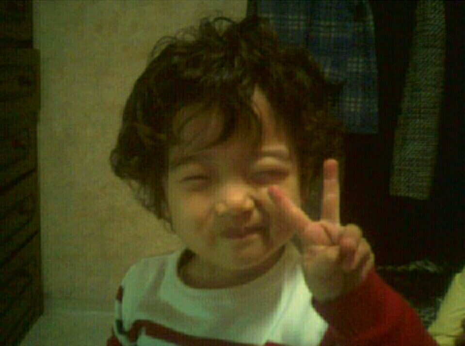
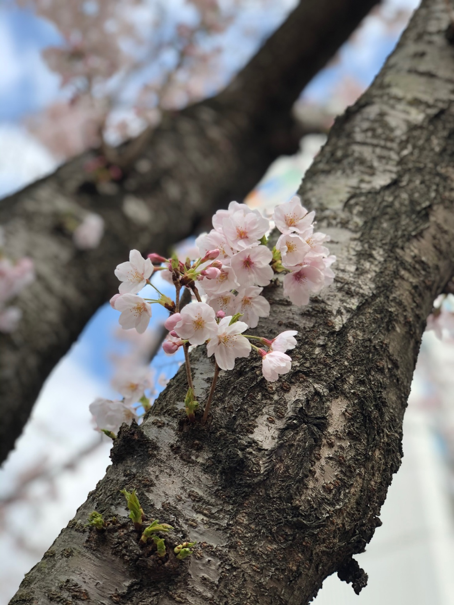

안녕하세요! 23학번 컴퓨터소프트웨어과 정진우입니다. 지금부터 저를 소개를 하겠습니다.
이름 : 정진우(鄭眞宇) 
나이 : 2001년생 (23세)
사는곳 : 해운대구 반송동
취미 : 운동, 게임, 노래방에서 노래 부르기, 영화나 드라마 시청
TMI :
1 : 저의 MBTI는 INFP입니다! 많이 내성적입니다.
하지만 누가 먼저 다가와 준다면 쉽게 친해질 수 있습니다.
2 : 그리고 저는 로스트아크를 즐겨하고 있습니다. 레벨은 1511입니다.
(좀 낮습니다.)
3 : 역시 여자친구가 없습니다.
4 : 군대는 육군! 미사일사령부에서 22년 11월 30일 병역의무를 마치고 전역을 했습니다.
5 : 사진은 정상적으로 찍은 사진이 없어서 애기 때 사진!

벚꽃이 참 예쁘게 폈습니다.
과제를 하기 전에 머리에 어떻게 만들까? 라고 생각을 하고 있다가
수업시간에 배운 걸로는 내가 원하는걸 만들기엔 한계가 있다고 생각했다.
그때 교수님들이 알려준 w3schools.com에서 많은 코드들을 찾았고
네이버처럼 깔끔하고 멋있진 않지만 내 수준에서 깔끔하게 만들고 싶었다.
만들다 보니 느꼈다. 세상엔 내가 원하는대로 되는게 없다.
엥? 원하는대로 되게 만들려면 노력을 하면 된다! 노력은 배신 안하거든
3월 23일에 컴퓨터소프트웨어과 1학년이랑 2학년 선배님들 다 모여서
단합대회를 했는데, 2학년 선배님들은 대부분 처음 봤고 조금 긴장됐다.
3팀으로 나눠졌고 어, 아싸, 장화신은 고양이로 이름이 정해졌다.
나는 장화신은 고양이 팀이였고, 1학년 2명, 2학년 6명으로 구성된 팀
- 중간 생략 -
회식할 때 선배님들한테 "선배님들은 1학년 때 막막하지 않으셨나요?"
다들 "당연히 막막했지 모르면 우리한테, 나한테 물어봐 다 알려줄게"
이 말이 너무 든든했고 열정이 생겼다. 지금도 자꾸 VSCode에 손이간다.
오늘 부캐 레이드 다 돌아야지
앙 너무 좋아
사실 쓰다보니 자기소개의 주제에서 벗어났다.
지금까지 23학번 정진우의 구구절절이었습니다.
감사합니다.